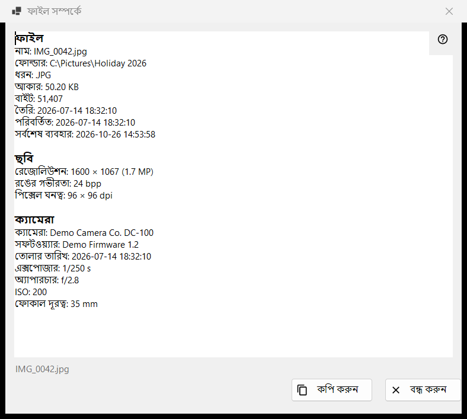
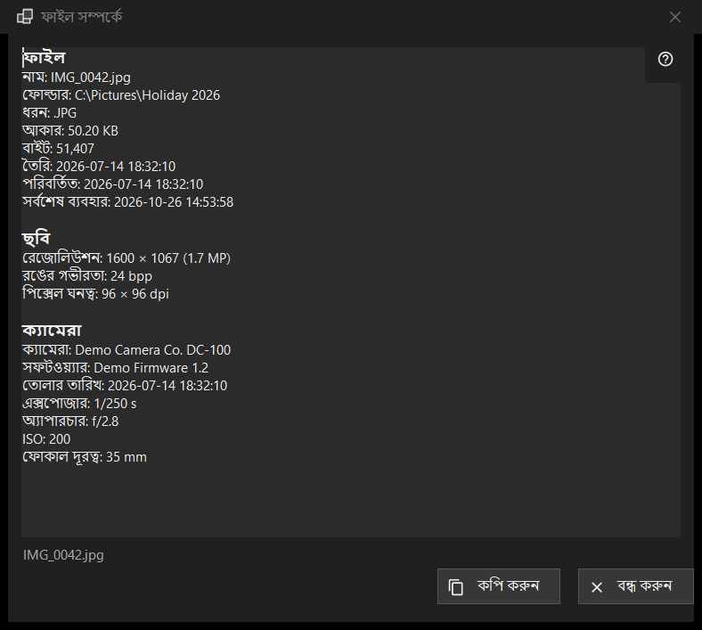

ফাইল সম্পর্কে
এটি কীসের জন্য
পর্দায় থাকা ফাইল সম্পর্কে প্রোগ্রাম যা জানে তার শুধু-পড়ার একটি ঝলক: ফাইলটি নিজে, ক্যামেরার তথ্যসহ ছবি, নথি এবং অডিও ও ভিডিও ট্র্যাক। এটি প্রথম প্যানেলের i আইটেম থেকে, বা ভিউয়ার মেনুর ফাইল ব্লকের ফাইল সম্পর্কে থেকে খোলে, এবং ক্লিকের মুহূর্তে ফাইলটি যেমন ছিল তেমনই বর্ণনা করে।


এই ক্রমে
- ভিউয়ারে একটি ফাইল দেখান।
- প্রথম প্যানেলের i আইটেমে ক্লিক করুন, বা মেনুতে ফাইল সম্পর্কে বেছে নিন।
- একটু অপেক্ষা করুন: স্ট্যাটাস বারে ফাইলের মেটাডেটা পড়া হচ্ছে.. লেখা আসে এবং সারিগুলো ভরে ওঠে।
- ব্লকগুলো পড়ুন, যা দরকার তা নির্বাচন করুন, আর পুরো লেখা ক্লিপবোর্ডে রাখতে কপি করুন চাপুন।
- বন্ধ করুন চাপুন বা Esc।
উপাদানসমূহ
ফাইল
প্রতিটি ফাইলে এই ব্লক থাকে: নাম, ফোল্ডার, ধরন, আকার, বাইট, তৈরি, পরিবর্তিত, সর্বশেষ ব্যবহার ও বৈশিষ্ট্য। যে সারিতে দেখানোর কিছু নেই সেটি বাদ যায়। কোনো ফাইল খোলা না থাকলে স্ট্যাটাস বারে কোনো ফাইল নির্বাচিত নেই লেখা আসে; আর্কাইভের অস্থায়ী কপি, দূরবর্তী ঠিকানা বা হারিয়ে যাওয়া ফাইলে ফাইলটি উপলব্ধ নয় আসে, এবং কোনো উইন্ডো খোলে না।
ছবি
ছবির জন্য: রেজোলিউশন যেমন দেখানো হয় তেমন (ফোনে কাত করে রাখা ছবি সোজা আকারে পড়া হয়), রঙের গভীরতা ও পিক্সেল ঘনত্ব, ফাইল সেগুলো রেকর্ড করলে।
ক্যামেরা
ছবির EXIF তথ্য থেকে পড়া হয়: ক্যামেরা, সফটওয়্যার, তোলার তারিখ, এক্সপোজার, অ্যাপারচার, ISO, ফোকাল দূরত্ব ও লেখক। স্থানাঙ্ক শুধু তখনই দেখা যায় যখন ছবিতে GPS তথ্য থাকে, এবং কপি করুন সেগুলোও নেয়, তাই শেয়ার করার আগে লেখাটি দেখে নিন।
নথি
টেক্সট ফাইলের জন্য: লাইন, শব্দ, অক্ষর ও এনকোডিং, সঙ্গে ফাইলের কেবল অংশ পড়া হয়েছে, যখন ফাইল এত বড় যে পুরোটা পড়া যায় না। ই-বুকের জন্য: নাম ও লেখক। PDF-এর জন্য: পৃষ্ঠা।
মিডিয়া, ভিডিও ও অডিও
অডিও ও ভিডিও ফাইলের জন্য ট্যাগ (নাম, শিল্পী, অ্যালবাম, বছর, ট্র্যাক, ধারা, পরিচালক, সিরিজ, সিজন, পর্ব, সময়কাল) এবং প্রতিটি ধরনের প্রথম ট্র্যাক (ভিডিও: রেজোলিউশন, প্রতি সেকেন্ডে ফ্রেম, কোডেক, বিটরেট; অডিও: কোডেক, চ্যানেল, স্যাম্পল রেট, বিটরেট) বাকি তথ্যের কিছুক্ষণ পরে যোগ হয়, যখন মিডিয়া ইঞ্জিন পড়া শেষ করে। উইন্ডো এর জন্য কখনো অপেক্ষা করে না। নেটওয়ার্ক স্ট্রিমে ট্র্যাকের সারি থাকে না।
কপি করুন ও বন্ধ করুন
কপি করুন পুরো লেখা ক্লিপবোর্ডে রাখে এবং স্ট্যাটাস বারে ক্লিপবোর্ডে কপি হয়েছে লেখা আসে; অন্য কোনো প্রোগ্রাম ক্লিপবোর্ড ধরে রাখলে সেটিও জানানো হয় এবং আপনি আবার কপি করুন চাপতে পারেন। Ctrl+C দিয়ে নির্বাচিত অংশ কপি করাও কাজ করে। কিছু পড়া না গেলে বাক্সে ফাইলের তথ্য পড়া যায়নি। লেখা থাকে। বোতামগুলোর পাশে স্ট্যাটাস বার ফাইলের নাম দেখায়। অন্য ফাইলে গেলে এই উইন্ডো বদলায় না: নতুন ফাইলের জন্য আবার i-তে ক্লিক করুন।